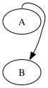

Updated 2026-06-16 — drawing bbox now matches dot. 4 steering-port goldens were minted at SR8. The remaining steering cases previously failed the full-SVG golden only on the drawing bbox (~4-5pt larger); the refined-curve updateBbBz fix closed that — A:n->B now renders 68x125, exactly dot.
The drawings below are the actual rendered SVGs — the visual match is the test. Backgrounds are a checker pattern so white fills show.

Minted goldens (APPENDED to manifest).
| id | input | Δ vs dot 15.0.0 |
|---|---|---|
| dot-port-compass-aligned | A:s->B:n | 0.000 (exact) |
| dot-port-steering-east | A:e->B | ≤0.5 |
| dot-port-steering-west | A:w->B | ≤0.5 |
| dot-port-record-aligned | A:f0->B | 0.000 (exact) |
A:n->B drawing bbox — now matches dot exactly.
| attribute | dot 15.0.0 | graphviz-ts | Δ |
|---|---|---|---|
| viewBox width | 68.00 | 68.00 | 0 |
| viewBox / height | 125.00 | 125.00 | 0 |
For the minted four the full SVG (geometry + the title fix: ports, - hyphen, compass-replaces-field) matches dot 15.0.0; each carries a TS portReference drift pin at 0.01pt.
TOP-steering / multi-rank / record-steering previously failed the full-SVG golden only on the drawing bbox — TS reserved ~4-5pt more for loops bulging beyond the node column. Fixed: the bbox came from updateBbBz expanding by the bezier control hull instead of the actual curve. Porting C’s adaptive refinement (emit.c:746) makes the bb match dot — A:n->B is now 68x125, byte-for-byte the dot extent. The 115 no-port goldens are unaffected (their splines never leave the node bb, so refinement is a no-op).
The bbox divergence is resolved (refined-curve bb). The edge geometry is pinned by steering-port-regression.test.ts as a dot-oracle; minting the remaining full-SVG goldens is the only follow-up and is append-only (AD-C1).